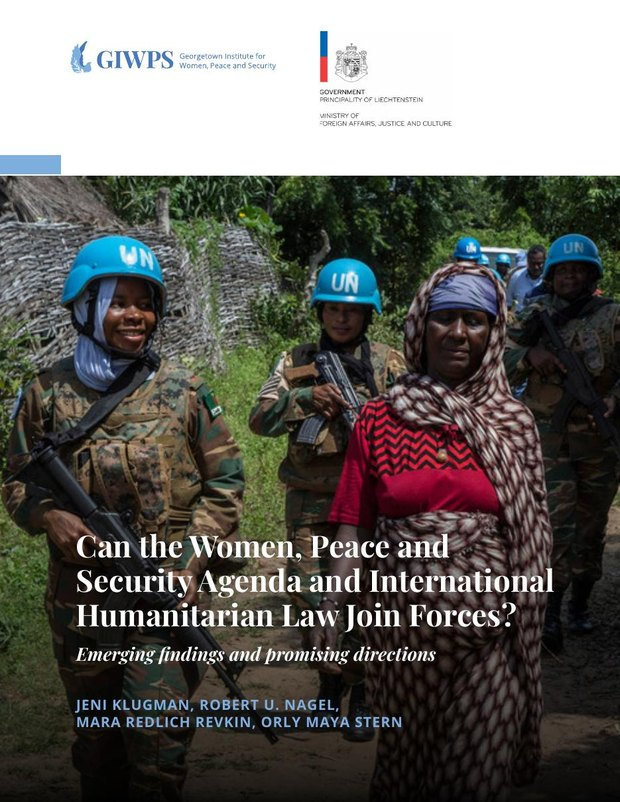
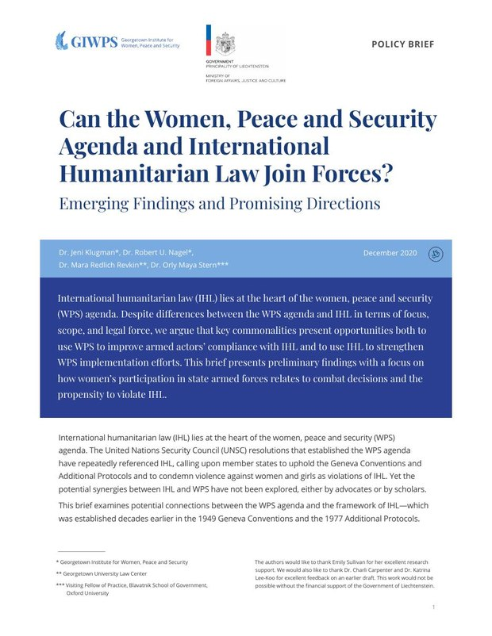

Gabriella Levy & Mara R. Revkin, Introducing the Fragility Index: A Tool for Evidence-Based Transitional and Recovery Programming. Lead authors, with chapters co-authored by the Duke Bass Connections student team. IOM South Sudan and Duke University (December 2025)

Mara R. Revkin, Benjamin Krick & Raed Aldulaimi, Reintegrating Iraqis Returning Home After Conflict: Lessons from Variation Between Four Communities. UN Institute for Disarmament Research (January 2025)

Olga Aymerich, Mara R. Revkin & Samuel Akau, Understanding Multidimensional Fragility in South Sudan: A Baseline Study of Kajo-Keji, Yei, Bor, and Wau Counties. Chapters researched and drafted with a Duke student team. IOM and Duke University (November 2023)

Mara R. Revkin, Pathways to Reintegration: Iraqi Families Formerly Associated with ISIL. United Nations Development Programme (March 2021)

Jeni Klugman, Robert U. Nagel, Mara R. Revkin & Orly Maya Stern, Can the Women, Peace and Security Agenda and International Humanitarian Law Join Forces? Emerging Findings and Promising Directions. Georgetown Institute for Women, Peace and Security (January 2021)

Jeni Klugman, Robert U. Nagel, Mara R. Revkin & Orly Maya Stern, Can the Women, Peace and Security Agenda and International Humanitarian Law Join Forces? Emerging Findings and Promising Directions — Policy Brief. Georgetown Institute for Women, Peace and Security (December 2020)

Mara R. Revkin & Olga Aymerich, Perceptions of Police, Security, and Governance in Iraq. International Organization for Migration and the Yale Law School Center for Global Legal Challenges (2020)

Mara R. Revkin & Olga Aymerich, with contributions from Kate Elizabeth Albers, Perceptions of Security and Police in Iraq: Baseline Survey Findings. International Organization for Migration, Iraq (April 9, 2020)

Mara R. Revkin & Delair Jabari, West Mosul: Perceptions on Return and Reintegration Among Stayees, IDPs, and Returnees. International Organization for Migration (June 2019)

Mara R. Revkin, The Limits of Punishment: Transitional Justice and Violent Extremism — Iraq Case Study. United Nations University and the Institute for Integrated Transitions (May 2018)

Mara R. Revkin, “I Am Nothing Without a Weapon”: Understanding Child Recruitment and Use by Armed Groups in Syria and Iraq, in Cradled by Conflict. United Nations University (2018)